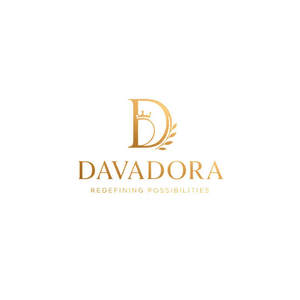

Trade Mark Journal No.2025/016 18 April 2025
UK00004184658 4 April 2025 (35)

- Class 35
- Advertising services for the promotion of e-commerce; Business marketing consultancy; Advertising and marketing consultancy; Business marketing services; Marketing; Marketing consultancy; Advertising and marketing services; Business marketing consulting services; Advertising services to create corporate and brand identity; Advertising and marketing; Advertising, marketing and promotional services; Advertising, promotional and marketing services; Marketing, advertising, and promotional services; On-line advertising and marketing services; Marketing services; Online marketing; Digital marketing; Advertising, marketing and promotion services; Marketing, advertising and promotion services; Influencer marketing; Business marketing consultation services; Consultancy relating to business advertising; Promotion [advertising] of business; Promotion, advertising and marketing of on-line websites; Business advertising services relating to franchising; Design of advertising logos; Consultancy services relating to advertising, publicity and marketing; Advertising copywriting; Brand creation services (advertising and promotion); Marketing consulting; Business merchandising display services; Brand strategy services; Business consultancy services for digital transformation; Product marketing; Advertising of business web sites; Promotional marketing; Business management consultancy via the Internet; Consultancy relating to marketing; Internet marketing; Marketing agency services; Business consultancy services relating to the marketing of fund raising campaigns; Business consultancy; Design of marketing surveys; Digital advertising services; Online business networking services; Business strategy services; Consultancy regarding advertising communications strategy; Business consulting services for digital transformation; Business management of retail outlets; Consultancy services in the field of affiliate marketing; Advertising, marketing and promotional consultancy, advisory and assistance services; Outsourcing services in the field of business analytics; Business consultancy services; Developing promotional campaigns for business; Brand positioning services; Consultancy relating to the organisation of promotional campaigns for business; Strategic business consultancy; Promotional marketing services using audiovisual media; Business promotion services; Creative marketing plan development services; Online advertising services; Business management and consultancy services; Information or enquiries on business and marketing; Business management consultancy services; Trade marketing [other than selling]; Providing business marketing information; Advertising services to create brand identity for others; Business management and consultancy; Business management consultancy; Business strategy development services; Acquisitions (Business -) consulting services; Consulting services in the field of Internet marketing; Business management of wholesale and retail outlets; Business recruitment consultancy; Business networking services; Business advice relating to strategic marketing; Referral marketing; Professional consultancy relating to marketing; Advice in the field of business management and marketing; Business advice relating to marketing; Marketing (Business advice relating to -); Merchandising; Graphic advertising services; Consultancy services regarding business strategies; Business consultancy to firms; Business management services relating to electronic commerce; Consultancy regarding advertising communication strategies; Business management of wholesale outlets; Research services relating to advertising and marketing; Consultancy relating to advertising and promotion services; Consulting services relating to marketing; Business promotion; Business consultancy services relating to manufacturing; Development of marketing concepts; Advertising and promotional services; Promotional and advertising services; Promotional advertising services; Providing marketing consulting in the field of social media; Marketing consultation services; Marketing analysis services; Business consultancy services relating to product development; Financial marketing; Advertising and marketing services provided via communications channels; Modeling services for advertising or sales promotion; Design of advertising brochures; Affiliate marketing; Business administration consultancy; Business acquisitions; Brand creation services; Product merchandising; Copywriting for advertising and promotional purposes; Advertising and promotion services; Search engine marketing services; Consultations relating to business advertising; Corporate management consultancy services; Copywriting; Business invoicing services; Marketing services in the field of web site traffic optimization; Business management for shops; Business management consultancy, also via the Internet; Marketing services in the field of restaurants.
FusionAcademy Designs Ltd